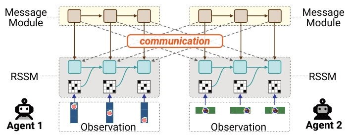
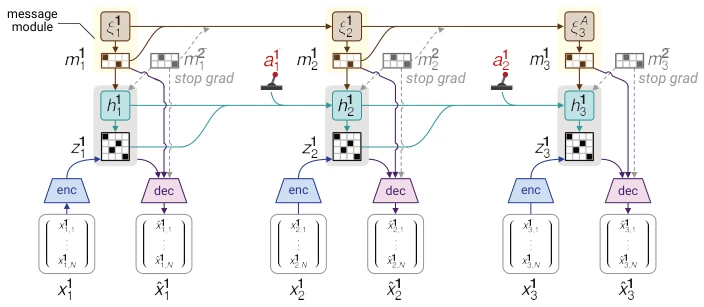
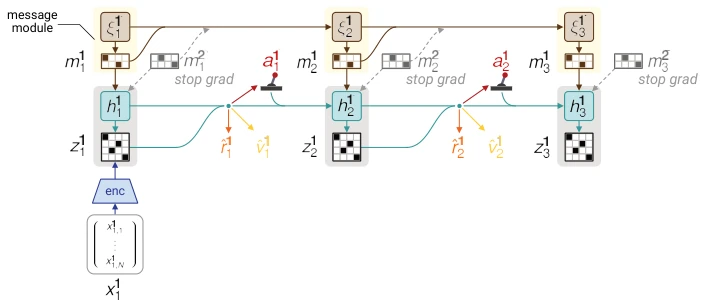
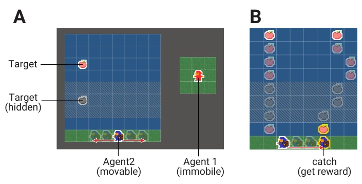
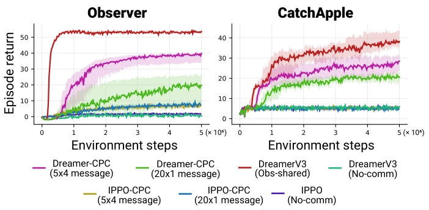

This paper applies a "world model" filter to the communication problem of MARL. Dreamer-CPC embeds CPC message learning into the RSSM of DreamerV3, attempting to enable agents to transmit historical information through latent states rather than current observations. This approach is indeed effective when observations are missing, with returns in CatchApple increasing 4-5 times. However, there are also significant drawbacks: only tested with two agents, the environment is still artificially synthesized, and no analysis of what the messages actually convey. World models themselves incur high computational overhead; will they collapse in multi-agent scenarios? The authors claim "decentralization", but the synchronization mechanism for message exchange during training is actually quite tightly coupled. Overall, it is an interesting theoretical integration, but engineering implementation still depends on scalability. Additionally, there is a lack of qualitative analysis on message semantics, and the black-box nature remains severe.
Multi-agent collaboration in partially observable environments is a challenging task. Existing methods such as IPPO-CPC [28] or CommNet [20] mostly rely on current observations to generate messages; once key information is temporarily occluded (e.g., CatchApple scenario), communication fails. Although the CTDE framework [30] is common, it violates the decentralized nature of natural intelligence. Lin et al. [15] use autoencoders to learn messages, but are also limited by instantaneous observations. CPC [22] provides a theoretical foundation, but lacks modeling of historical dynamics. Although Nomura et al. [18] proposed decentralized world models, they did not combine them with reinforcement learning imagination spaces. This paper aims to solve the "history dependency" problem, enabling messages to carry time-accumulated information rather than just current snapshots. By integrating RSSM, it is expected to perform predictive coordination based on latent dynamics even when observations are missing, filling the gap in existing methods regarding temporal information transmission.
The overall process is based on the DreamerV3 architecture, where each agent maintains an independent RSSM world model and message module. In terms of data flow, agents receive observations and actions, updating RSSM states h_t, z_t. The message module generates prior messages from xi_t and infers posterior messages from RSSM states. Messages are used to predict observations and rewards, and are exchanged in imagination trajectories. The innovations lie in: 1. Messages originate from latent states, encoding history; 2. A unified loss function optimizes the world model and message module; 3. Synchronous exchange of messages during the imagination phase, using stop-gradient to maintain decentralization. Actor-Critic updates on imagination trajectories, utilizing messages to enhance state prediction. Specifically, the deterministic state h_t of RSSM receives predicted messages m_hat_t from other agents, while observation prediction x_hat_t receives inferred messages m_t. This design makes messages a bridge connecting world models of different agents, rather than simple feature concatenation.

Fig. 1. Overview of Dreamer-CPC. Each agent maintains an RSSM-based world model and a message module. Messages are inferred from the latent states of the world model and exchanged between agents.

Fig. 2. Overview of world-model learning in Dreamer-CPC. Each agent learns an RSSM state from its local observation history and action history. The message module pre- dicts a message from its recurrent state and infers a message from the RSSM state. The learned model reconstructs observations using the inferred message and received messages, and predicts rewards and continuation from the RSSM state. Messages from other agents are treated with stop gradient, so that communication can be used for prediction without backpropagating through other agents.

Fig. 3. Overview of actor and critic learning with message exchange during imagi- nation. At each imagined step, agents synchronously apply the message generation and inference procedure, share messages, and update their RSSM states using the exchanged messages. Actor and critic losses are then computed on the resulting imagi- nation rollout. Stop gradient labels indicate that received messages are detached during optimization.
Tested in two environments: Observer and CatchApple. Observer involves non-cooperative information sharing, while CatchApple introduces observation occlusion. Baselines include IPPO-CPC [28], IPPO, and DreamerV3 variants. The metric is the episode return of Agent 2. Results: In CatchApple, Dreamer-CPC returns are 4-5 times that of IPPO-CPC, demonstrating the capability to handle occlusion. In Observer, it outperforms the no-communication baseline. Ablation studies show the 5x4 message configuration is superior to 20x1. It is found that world model messages are more effective than current observation messages when observations are missing. Additionally, compared to DreamerV3 sharing observations directly, Dreamer-CPC is slightly lower but does not require sharing raw data, balancing privacy and performance. Experiments verify the robustness of latent dynamic-based communication in partially observable tasks.

Fig. 5. Overview of CatchApple environment. (A) The environment contains an 8 × 8 falling object area and one ground row. Agent 1 observes the falling object trajectory and receives no reward, whereas Agent 2 controls the catcher on the ground row and observes its own column. The hatched region indicates an occluded region in which the object position is replaced by a hidden flag. (B) The object moves downward, possibly with diagonal motion and boundary reflection, and capture is judged when the object reaches the lowest row of the falling object area.

Fig. 6. Learning curves in Observer and CatchApple. Curves show the IQM of episode return over 10 independent runs. Shaded regions show 95% confidence intervals esti- mated by paired nonparametric bootstrap over runs. The left and right panels show Observer and CatchApple, respectively.